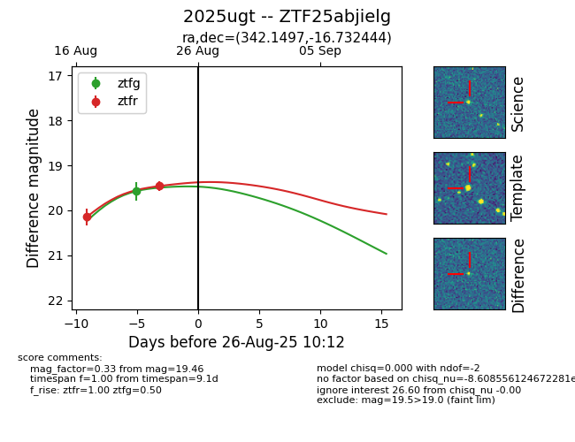

Target 2025ugt at 2025-08-21 09:29, see:
FINK: fink-portal.org/ZTF25abjielg
Lasair: lasair-ztf.lsst.ac.uk/objects/ZTF25abjielg
ALeRCE: alerce.online/object/ZTF25abjielg
TNS: wis-tns.org/object/2025ugt
YSE: ziggy.ucolick.org/yse/transient_detail/2025ugt
alt names
ZTF25abjielg (ztf,alerce)
2025ugt (tns,yse)
coordinates:
equatorial (ra, dec) = (342.1497,-16.73241)
galactic (l, b) = (46.6307,-59.77575)
photometry
last ztfg=19.57, ztfr=20.15
2 ztfg, 1 ztfr detections
